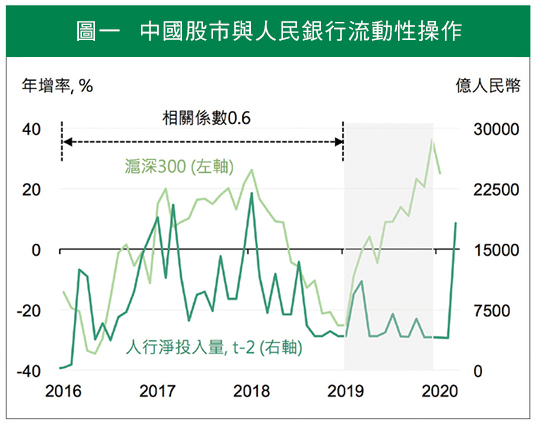
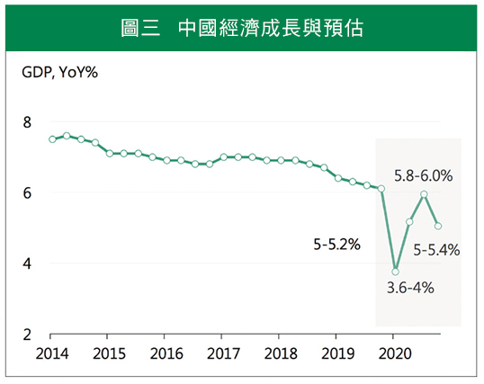

面對疫情恐懼，世界工廠如何重新啟動
庚屬金，子為鼠，這個庚子年為名符其實的金鼠年。然而，過去一個月，新型冠狀病毒 (COVID-19，簡稱新冠肺炎) 取代農曆年節的往返人潮，在各城市間流竄，讓本該迎接過年旺季銷售的店家，拉下鐵門。蕭瑟情境讓人回想到歷史上每逢庚子的慘痛記憶。看樣子，這個年，又是個挑戰。
疫情使民心浮動，「穩經濟」為首要任務
這幾年，中國真的不好過。面對貿易戰逆風、外資出走，2019年經濟成長勉強保六。面對新冠肺炎，此次大陸官方祭出封城手段，使經濟活動急凍。疫情及生計擔憂，與政府欲在百年黨慶前打造的小康富庶社會，出現落差。
現階段中國以彈性復工方式，平衡成長與防疫兩難。而各地不同的管制措施，讓復工陷入工廠開門營運，卻缺料或缺工之窘境。未來一個月“被滯留”人流與物流可否解禁，將是實體經濟重新啟動的關鍵。
另一方面，為加快產能回復，大陸官方勢必須於最短時間內，重新凝聚民心。大規模的財政及貨幣政策，為可見發展。一方面是其能重塑政府“有所為”形象，同時對政策市色彩濃厚的陸股，帶來提振效果 (見圖一)，而後者正是激勵民眾信心最快且成本較低的政策選項。

註：衡量2016年以來人行操作流動性投入累積量 ; 灰底為2019年時期，當時人行偏好利率政策，以降息及降準提振經濟。
資料來源：Wind
債務違約風險飆高？「穩金融」避免二次跳電
避免民怨過載致二次跳電，為當前中國另一個要務。而那最後一根稻草，怕是近年搖搖欲墜的債市。
近十年中國債務成長快速，官方力行金融供給側改革、打破剛性兌付的政策方向，及大環境景氣的放緩，致企業債務違約快速增加，2019年甚攀至歷史新高 (見圖二)。新冠肺炎下的封城停業，讓廠商現金流面臨中斷危機，恐為岌岌可危的債信，再添一筆壓力。
避免疫情火上加油，導致金融系統性風險，短線中國勢必會極力避免大規模倒債出現。在此之下，政策或從過往的去槓桿、穩槓桿，暫往再槓桿調整。近期人行推出的專項貸款，即顯露風向轉變。預期短線救市措施，將壓低利率，減緩中國債市寒意。

資料來源：Wind
「穩」的最高指導原則，經濟成長可望保五
當前市場最關注的是: 今年中國經濟成長能保幾？這個答案牽動投資人信心，影響中國金融市場，甚全球股市穩定。目前看來 (見圖三)，若復工順利，預估疫情衝擊將集中於第一季; 隨貨幣與財政政策發酵，下半年景氣可望反彈，助全年經濟挺住5%。
潛在風險的債市，只要不爆發重大危機，疲軟的市場信心即有望隨強而有力的政策，緩步回穩。
金鼠年對中國金融市場而言，到底是咬著金幣的錢鼠，又或者是咬破金袋的野鼠呢？這我們不得而知。能確定的是，政策對提振經濟及市場信心即為重要。此或可帶來隱藏於疫情恐懼下，貪婪投資者的短線投機契機。

註1：灰底為2020年各季GDP年增率預估值。
註2：消費減幅參考零售銷售占比，GDP當中C、G及I的占比為39%、15%及45%，假設Q1政府支出年增13%，投資增速9%。
資料來源：Bloomberg，國泰世華銀行投資研究團隊推估
【揭露事項與免責聲明】
本報告為國泰世華銀行（下稱“本公司”）提供尊貴理財客戶之參考資料，並非針對特定客戶所作的投資建議，且在本報告撰寫過程中，並未考量讀者個別的財務狀況與需求，故本報告所提供的資訊無法適用於所有讀者。
本報告係根據本公司所取得的資訊加以彙集及研究分析，本公司並不保證各項資訊之完整性及正確性。本報告中所提出之意見係為本報告出版當時的意見，邇後相關資訊或意見若有變更，本公司將不會另行通知。本公司亦無義務持續更新本報告之內容或追蹤研究本報告所涵蓋之主題。本報告中提及的標的價格、價值及收益隨時可能因各種本公司無法控制之政治、經濟、市場等因素而產生變化。本報告中之各項預測，均係基於對目前所得資訊作合理假設下所完成，所以並不必然實現。本報告不得視為買賣有價證券或其他金融商品的要約或要約之引誘。
國泰金融集團（下稱“本集團”）所屬各公司可能個別基於特定目的且針對特定人士出具研究報告、提供口頭或書面的市場看法或投資建議（下稱“提供資訊”），鑑於提供資訊之單位、時間、對象及目的不同，本報告與本集團其他單位所提供資訊可能有不一致或相牴觸之情事；本集團所屬公司從事各項金融業務，包括但不限於銀行、保險、證券經紀、承銷、自有資金投資、資產管理、證券投資信託等。本集團各公司對於本報告所涵蓋之標的可能有投資或其他業務往來關係，各公司從事交易之方向亦可能與本報告不一致，讀者應審慎評估自身投資風險，自行決定投資方針，不應以前述不一致或相抵觸為由，主張本公司或本集團其他成員有侵害讀者權益之情事。